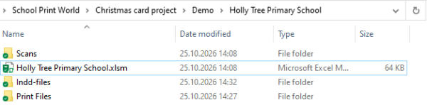
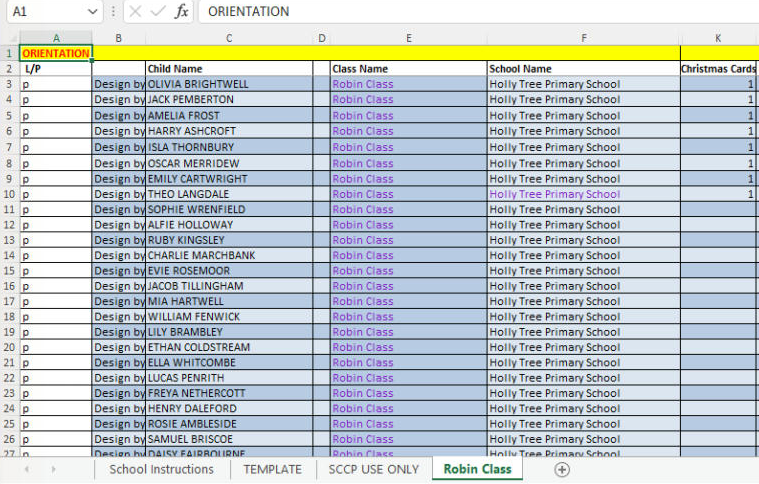
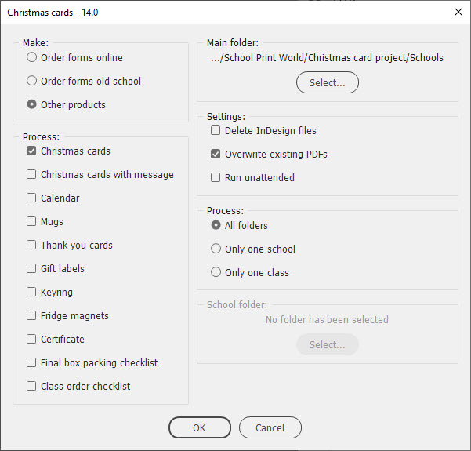
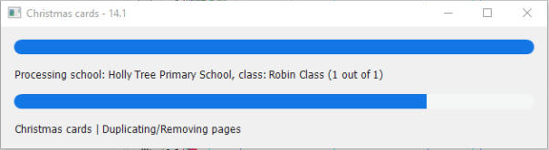

Christmas card project
This is the biggest custom script I’ve ever written for InDesign. It was developed for a UK company that turns children’s drawings into Christmas products. Every autumn, schools send them pupils’ drawings, the drawings are scanned, and parents order Christmas cards, calendars, mugs, keyrings and so on with their child’s artwork. In a busy season, that’s hundreds of schools, thousands of classes and tens of thousands of pupils, and every product has to carry the right picture with the right name, class and school.
The project started in 2016 as a small script that read one CSV file per class and made four products. Since then, it has been reworked every year: new products appeared, old ones were dropped, the data moved from CSV files to an Excel workbook, and the script learned to run at night without anyone at the computer. I develop and test it in InDesign 2024 on Windows; the company runs it on several Windows PCs.
How it works
The script takes three things as input:
- An Excel workbook — one per school, one tab per class. Each row is a pupil: the L/P (landscape/portrait) column, the child’s name, class and school as they should be printed, and how many items of each product the parents ordered. The layout of the workbook comes from the company’s online ordering system, so the columns never move: a new product simply takes the place of an old one.
- Scans — the pupils’ drawings as jpegs, in a Scans folder with a subfolder for every class. The subfolder name matches the tab name in the workbook.
- Templates — an InDesign template (indt) for every product in the Templates folder.
Here’s a school folder after a run. The script adds the Indd-files and Print Files folders:

And a class tab of the workbook. (These are made-up pupils for a test school; I hid a few empty columns to make the screenshot narrower.)

For each school, the script reads the workbook, goes through the classes, opens the template of every product that was ordered in the class, places the drawings and fills in the text (child’s name, class name, school name, message, etc.), and exports the result to PDF ready for printing. Products are made only when at least one item was ordered in the class. The pages for a pupil are repeated according to the pack size and quantity, so, for example, one pack of 12 Christmas cards gives 3 pages of 4up cards.
Here’s the first page of a 4up print file: one pupil’s card, four times on an SRA3 sheet, ready to be printed and cut.
Two stages
The work is done in two stages:
- Order forms. At first, all scans are portrait jpegs, and the L/P column decides which template page is used. The script makes the order forms for parents (8up, front and back, with a QR code, reference number and PIN for ordering online) and a letter for each school with the number of classes.
- Products. After the parents have ordered online, the scans come back from the ordering system in their real orientation (parents can rotate or replace the picture), and the script makes the products and checklists according to the quantities in the workbook.
Products
This season, the script makes:
- Christmas cards (4up), Christmas cards with message (double-sided: the message goes inside), and the 3-for-2 versions of both
- Gift labels (8up) and Thank you cards (6up)
- Calendars (A3, 1up) and calendar stickers
- Mugs (a file per class plus one for the whole school) and mug stickers
- Keyrings (21up, two-sided) and fridge magnets (18up)
- Value packs: two packs of cards and one pack of gift labels
Besides the print files, it makes the paperwork that keeps the production in order: the Class order checklist (a page per class with all the totals), the Final box packing checklist for each school, the Snag order checklist for orders delivered to home addresses, and a certificate with the funds raised by the school.
Templates
The templates are made by the company’s designers, so they can change the design without touching the script. Each product has a 1up template, which is placed into an N-up template for printing. The script finds its frames by script labels, so every label must be unique, and the frames must not be grouped: otherwise, the script can’t find them. Landscape pictures are rotated by rotated frames in the templates, not by the script, and the cropping is controlled by the Image object style. The frames are made with 2 mm bleed, while the PDFs are exported without bleed.

Rules the script follows
Over the years, the rules have grown out of real problems in production. Here are the most important ones:
- Pupil N = page N. On every product with one pupil per page, the pupil’s row number in the class list is the page number in the print file. The printers print by page numbers from the order list, so pages are never re-sorted.
- Names are checked against scans both ways. A single missing name would shift all the following names onto the wrong pictures.
- Data is cleaned up: spaces are trimmed and double spaces are collapsed in every cell, tab name and L/P value; names are matched case-insensitively. In file names, illegal characters are replaced with underscores.
- Hiding a name. If a parent doesn’t want the name, class or school printed, the value is put between double asterisks, like
**Bobby**. The script skips it on the products but keeps it in the checklists, adding “(no name printed on products)”. - Long names are shrunk to fit the frame, down to 10 pt, so they never overflow into extra or blank items.
- An error never stops the batch. The script writes the error to the log — with the school, class and cell — and carries on. When the batch is finished, you check the log.
- Re-runs make only what’s missing. With the Overwrite option off, the script re-makes only missing files and files smaller than about 30 KB (that’s how a failed export usually looks). The checklists and certificates are always rewritten.
The scripts
The project consists of several files, which must all be in the same folder:
- Christmas cards - Settings.jsx — the dialog box where you choose what to process and how. The settings are saved and used by the main script.
- Christmas cards - Main.jsx — the main script that does most of the job.
- Christmas cards - Lib.jsxinc — the library with functions used by both scripts, as well as all the variables, the script name and version.
- log.jsxinc — the library for logging.
- Christmas cards - Reset.jsx — clears the stored settings.
The usual workflow is: set the options in Settings, then run Main. In the dialog box, you choose what to make (online order forms, old-school order forms, or other products) and which products, select the main folder, and process all folders, only one school or only one class. There are also options to delete InDesign files after export, overwrite existing PDFs, and run unattended.

While the main script is working, a progress window shows the school, the class and the current step.

Night Shift Runner
A big batch can take hours, so this season I added a way to run it at night. When the Run unattended option is on, the main script runs silently with the saved settings: no alerts, only messages in the log. A small VBScript, NightShiftRunner.vbs, is started by the Windows Task Scheduler at about 2 a.m. It launches InDesign, runs the main script, writes a log to the Log subfolder, and quits InDesign. In the morning, the print files are waiting.
This script was written for a particular company and its workflow, so it won’t work for you as it is. But I hope that some of the ideas will be useful if you are building something similar: an automated workflow where InDesign makes thousands of personalised pages from a spreadsheet, a folder of pictures and a set of templates.
Pages about this project
Related pages:
Leavers hoodie script — another script I wrote for the same company.